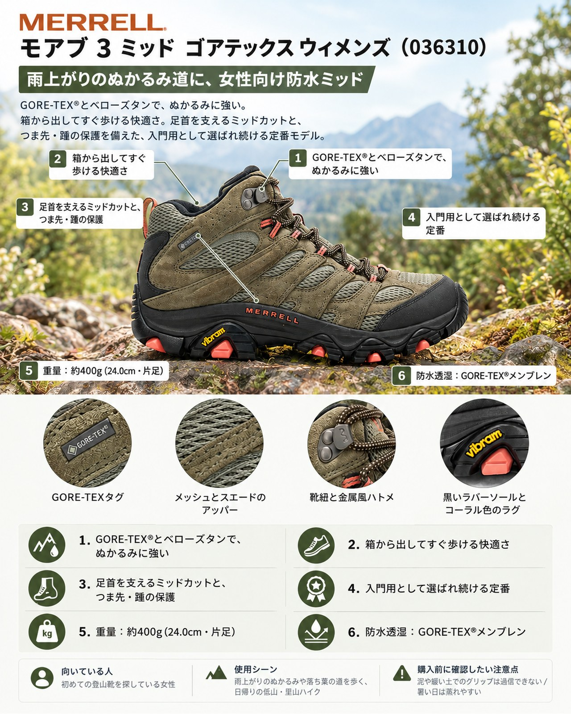

10月の後半は、前線が通るたびに登山道がぬかるみ、濡れた落ち葉が積もる季節です。高い山は初雪を迎えて冬支度に入り、紅葉の見ごろは中腹から低山へと下りてきます。雨上がりの低山ハイクで、靴の中まで水がしみたり、足首をひねりそうになったりした経験がある人も多いはずです。
導入
10月の後半は、前線が通るたびに登山道がぬかるみ、濡れた落ち葉が積もる季節です。高い山は初雪を迎えて冬支度に入り、紅葉の見ごろは中腹から低山へと下りてきます。雨上がりの低山ハイクで、靴の中まで水がしみたり、足首をひねりそうになったりした経験がある人も多いはずです。
今回紹介するのは、メレルの「MOAB 3 MID GORE-TEX® モアブ 3 ミッド ゴアテックス®［ウィメンズ］」です。メレルの定番「モアブ」シリーズの防水ミッドカットで、GORE-TEX®メンブレンとベローズタンで水や小石の侵入を防ぎます。初めての登山靴を探している女性や、スニーカーやローカットから足首まで覆う1足に替えたい人の、日帰りの低山・里山歩きに向いています。
基本スペック
※仕様と価格はメレル公式オンラインストアの商品ページによる（2026年10月21日確認）。公式ページには「2026年8月入荷分の商品より、仕様を一部変更」との告知があり、旧仕様品と新仕様品が当面混在するとしています。
| 項目 | 内容 |
|---|---|
| 商品名 | MOAB 3 MID GORE-TEX® モアブ 3 ミッド ゴアテックス®［ウィメンズ］ |
| 品番 | 036310 |
| 価格 | 25,300円 |
| 重量 | 約400g（24.0cm・片足） |
| タイプ | ミッドカット＋ミドルワイズ |
| アッパー | 撥水ピッグスキンレザーとメッシュ |
| 防水透湿 | GORE-TEX®メンブレン |
| ミッドソール | 軽量EVAフォーム、メレル エアークッション（踵部） |
| アウトソール | Vibram TC5+（メレル専用コンパウンド）、ラグの深さ5mm |
| インソール | Kinetic Fit™ ADVANCED |
| シャンク | ナイロン アーチシャンク |
| サイズ | 22.5〜25.0cm（公式の説明文。サイズ選択欄には25.5cmも表示） |
GORE-TEX®とベローズタンで、ぬかるみに強い
防水透湿メンブレンにGORE-TEX®を使い、シュータンにはベローズタンを採用しています。公式は、土や小石、水の侵入を防ぐ構造と説明しています。使った人の声でも、足が確実に乾いた状態に保たれた、ベローズタンでぬかるみを歩きやすいと評価されています。雨の翌日の泥道や、濡れた落ち葉の斜面を歩く場面で安心感があります。
箱から出してすぐ歩ける快適さ
使った人の声では、慣らし期間がほとんど要らない快適さが挙がり、パッド入りのカラー、ヒールのエアクッション、土踏まずの支えが評価されています。同じシリーズの他モデル（独自防水膜版）でも、厚いパッドの舌べろやカラーによる履き心地が長所に挙げられています。踵の衝撃を和らげるメレル エアークッションとKinetic Fit™ ADVANCEDインソール、土踏まずを支えるナイロンシャンクの組み合わせで、長時間歩いても疲れにくい作りを狙っています。
足首を支えるミッドカットと、つま先・踵の保護
ミッドカットで、一般的なローカットのトレイルシューズより足首の支えがあるという声があります。つま先と踵にはラバーのトゥキャップとヒールを備え、石や木の根から足を守ります。
入門用として選ばれ続ける定番
一部の紹介では、売れたトレッキングシューズの上位に挙げられ、初めてのトレッキングシューズとして勧められています。価格に対する快適性と安定性を評価する声もあります。
デメリット・注意点
- 泥や緩い土でのグリップは過信できない：同じシリーズの他モデル（独自防水膜版）では、グリップは十分だが際立ってはいないとされ、泥詰まりや緩い土での食いつきの弱さが指摘されています（下りでのグリップを評価する声もあり、評価は分かれます）。濡れた落ち葉や泥の急斜面では歩幅を小さくし、慎重に歩きましょう。
- 暑い日は蒸れやすい：使った人の声では、暑い日には蒸れてべたつくとされています。気温が上がる低山の登りでは、通気性の高い靴下を合わせると快適です。
- ミッドカットとしては足首まわりが低め：足首まわりが低いため、深い水たまりや沢では水が入りやすいという指摘があります。防水でも、水に浸かる歩き方は避けたいところです。
- やや重く、ごつい：使った人の声では、同じクラスの靴に比べてやや重く、ごつく感じるとされています。軽快さを最優先する人には合わないかもしれません。
- 縫い目とアイレットの耐久性：同じシリーズの他モデルでは、縫い目の多さとナイロン製アイレットの長期使用での擦り切れが懸念されています。
- 仕様変更の内容は購入前に確認を：2026年8月入荷分から仕様が一部変わり、旧仕様品と混在するとされています。変更点は公式ページの本文では読み取れないため、店頭や問い合わせで確かめてください。
向いている人・向いていない人
◎向いている人
- 初めての登山靴を探している女性
- 雨上がりのぬかるみや落ち葉の道を歩く、日帰りの低山・里山ハイクが中心の人
- 慣らしに時間をかけず、すぐ快適に履きたい人
△向いていない人
- 重い荷物を背負う縦走や、岩稜が続く本格的な山行が中心の人
- 暑い時期の山行が多く、通気性を最優先したい人
- 軽さを重視して、ローカットに近い軽快さを求める人
まとめ
メレル モアブ 3 ミッド ゴアテックス［ウィメンズ］は、GORE-TEX®とベローズタンによる防水性、慣らし不要の快適さ、足首を支えるミッドカットを25,300円でそろえた入門向けの定番ミッドです。秋雨のあとのぬかるみ道を、足を濡らさず歩きたい人の最初の1足として候補になります。一方で、泥や濡れた落ち葉でのグリップは過信せず、重さや蒸れやすさも踏まえて選んでください。2026年8月入荷分からの仕様変更もあるため、購入時に確認しておくと安心です。
この記事で紹介した商品
価格・重量・在庫は各ブランド公式サイトの記載（確認日つき）にもとづきます。商品を押すと、購入先を選べます。
この記事にはアフィリエイト広告が含まれます。リンク先での購入により、当サイトが報酬を受け取る場合があります。山行の前には、最新の気象とルートの状況を必ずご確認ください。